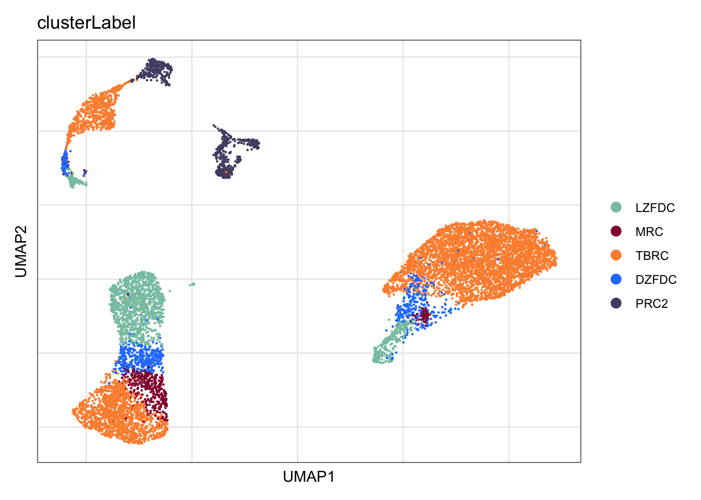
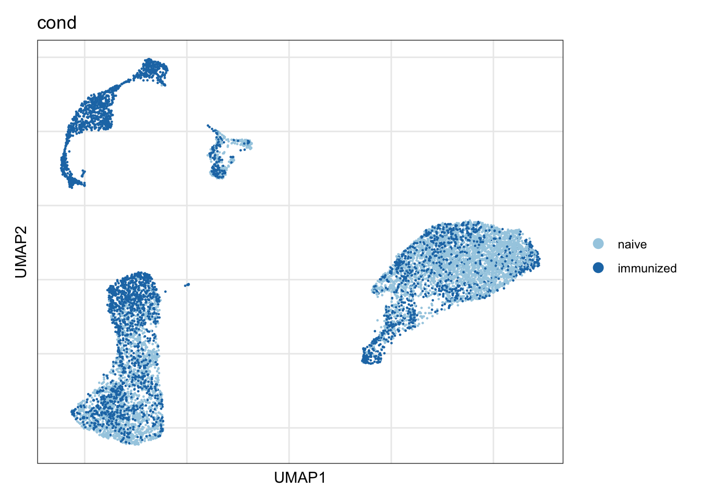

DE genes between cond
Last updated: 2022-01-13
Checks: 6 1
Knit directory: CrossSLO_BRC_CXCL13/
This reproducible R Markdown analysis was created with workflowr (version 1.7.0). The Checks tab describes the reproducibility checks that were applied when the results were created. The Past versions tab lists the development history.
The R Markdown is untracked by Git. To know which version of the R Markdown file created these results, you’ll want to first commit it to the Git repo. If you’re still working on the analysis, you can ignore this warning. When you’re finished, you can run wflow_publish to commit the R Markdown file and build the HTML.
Great job! The global environment was empty. Objects defined in the global environment can affect the analysis in your R Markdown file in unknown ways. For reproduciblity it’s best to always run the code in an empty environment.
The command set.seed(20210519) was run prior to running the code in the R Markdown file. Setting a seed ensures that any results that rely on randomness, e.g. subsampling or permutations, are reproducible.
Great job! Recording the operating system, R version, and package versions is critical for reproducibility.
Nice! There were no cached chunks for this analysis, so you can be confident that you successfully produced the results during this run.
Great job! Using relative paths to the files within your workflowr project makes it easier to run your code on other machines.
Great! You are using Git for version control. Tracking code development and connecting the code version to the results is critical for reproducibility.
The results in this page were generated with repository version 18aa355. See the Past versions tab to see a history of the changes made to the R Markdown and HTML files.
Note that you need to be careful to ensure that all relevant files for the analysis have been committed to Git prior to generating the results (you can use wflow_publish or wflow_git_commit). workflowr only checks the R Markdown file, but you know if there are other scripts or data files that it depends on. Below is the status of the Git repository when the results were generated:
Ignored files:
Ignored: .DS_Store
Ignored: .Rhistory
Ignored: .Rproj.user/
Ignored: analysis/.DS_Store
Ignored: data/GSEA/
Ignored: data/cellphonedb/
Ignored: data/destiny/
Ignored: data/lympho/
Ignored: data/processedData/
Ignored: data/processedDataLymphocytes/
Ignored: figure/.DS_Store
Ignored: figure/plotSubsetSpecificSignatures.Rmd/
Ignored: figure/plotSubsetSpecificSignatures2.Rmd/.DS_Store
Untracked files:
Untracked: analysis/DEgenesCond.Rmd
Untracked: analysis/varPartioning.Rmd
Unstaged changes:
Modified: analysis/SubsetSpecificGeneSignaturesSignaling.Rmd
Modified: analysis/analyseCPDBoutImm.Rmd
Modified: analysis/visSelIntHeatmap.Rmd
Modified: figure/visSelIntHeatmapSignaling.Rmd/down vp Il4-1.pdf
Modified: figure/visSelIntHeatmapSignaling.Rmd/down vp Il4-2.pdf
Modified: figure/visSelIntHeatmapSignaling.Rmd/down vp Il4-3.pdf
Modified: figure/visSelIntHeatmapSignaling.Rmd/down vp Il4-4.pdf
Modified: figure/visSelIntHeatmapSignaling.Rmd/down vp Il4-5.pdf
Modified: figure/visSelIntHeatmapSignaling.Rmd/down vp ncTgfbMAPK-1.pdf
Modified: figure/visSelIntHeatmapSignaling.Rmd/down vp ncTgfbMAPK-2.pdf
Modified: figure/visSelIntHeatmapSignaling.Rmd/down vp ncTgfbMAPK-3.pdf
Modified: figure/visSelIntHeatmapSignaling.Rmd/down vp ncTgfbMAPK-4.pdf
Modified: figure/visSelIntHeatmapSignaling.Rmd/down vp ncTgfbMAPK-5.pdf
Modified: figure/visSelIntHeatmapSignaling.Rmd/down vp ncTgfbNFKB-1.pdf
Modified: figure/visSelIntHeatmapSignaling.Rmd/down vp ncTgfbNFKB-2.pdf
Modified: figure/visSelIntHeatmapSignaling.Rmd/down vp ncTgfbNFKB-3.pdf
Modified: figure/visSelIntHeatmapSignaling.Rmd/down vp ncTgfbNFKB-4.pdf
Modified: figure/visSelIntHeatmapSignaling.Rmd/down vp ncTgfbNFKB-5.pdf
Modified: figure/visSelIntHeatmapSignaling.Rmd/down vp ncTgfbNFKB-6.pdf
Modified: figure/visSelIntHeatmapSignaling.Rmd/down vp ncTgfbPI3K-1.pdf
Modified: figure/visSelIntHeatmapSignaling.Rmd/down vp ncTgfbPI3K-2.pdf
Modified: figure/visSelIntHeatmapSignaling.Rmd/down vp ncTgfbPI3K-3.pdf
Modified: figure/visSelIntHeatmapSignaling.Rmd/down vp ncTgfbPI3K-4.pdf
Modified: figure/visSelIntHeatmapSignaling.Rmd/down vp ncTgfbPI3K-5.pdf
Modified: figure/visSelIntHeatmapSignaling.Rmd/down vp ncTgfbPI3K-6.pdf
Modified: figure/visSelIntHeatmapSignaling.Rmd/down vp ncTgfbRas-1.pdf
Modified: figure/visSelIntHeatmapSignaling.Rmd/down vp ncTgfbRas-2.pdf
Modified: figure/visSelIntHeatmapSignaling.Rmd/down vp ncTgfbRas-3.pdf
Modified: figure/visSelIntHeatmapSignaling.Rmd/down vp ncTgfbRas-4.pdf
Modified: figure/visSelIntHeatmapSignaling.Rmd/down vp ncTgfbRas-5.pdf
Modified: figure/visSelIntHeatmapSignaling.Rmd/down vp ncTgfbRas-6.pdf
Modified: figure/visSelIntHeatmapSignaling.Rmd/down vp ncTgfbRhoa-1.pdf
Modified: figure/visSelIntHeatmapSignaling.Rmd/down vp ncTgfbRhoa-2.pdf
Modified: figure/visSelIntHeatmapSignaling.Rmd/down vp ncTgfbRhoa-3.pdf
Modified: figure/visSelIntHeatmapSignaling.Rmd/down vp tgfb-1.pdf
Modified: figure/visSelIntHeatmapSignaling.Rmd/down vp tgfb-10.pdf
Modified: figure/visSelIntHeatmapSignaling.Rmd/down vp tgfb-11.pdf
Modified: figure/visSelIntHeatmapSignaling.Rmd/down vp tgfb-12.pdf
Modified: figure/visSelIntHeatmapSignaling.Rmd/down vp tgfb-2.pdf
Modified: figure/visSelIntHeatmapSignaling.Rmd/down vp tgfb-3.pdf
Modified: figure/visSelIntHeatmapSignaling.Rmd/down vp tgfb-4.pdf
Modified: figure/visSelIntHeatmapSignaling.Rmd/down vp tgfb-5.pdf
Modified: figure/visSelIntHeatmapSignaling.Rmd/down vp tgfb-6.pdf
Modified: figure/visSelIntHeatmapSignaling.Rmd/down vp tgfb-7.pdf
Modified: figure/visSelIntHeatmapSignaling.Rmd/down vp tgfb-8.pdf
Modified: figure/visSelIntHeatmapSignaling.Rmd/down vp tgfb-9.pdf
Modified: figure/visSelIntHeatmapSignaling.Rmd/down vp tgfbDown-1.pdf
Modified: figure/visSelIntHeatmapSignaling.Rmd/down vp tgfbDown-10.pdf
Modified: figure/visSelIntHeatmapSignaling.Rmd/down vp tgfbDown-11.pdf
Modified: figure/visSelIntHeatmapSignaling.Rmd/down vp tgfbDown-12.pdf
Modified: figure/visSelIntHeatmapSignaling.Rmd/down vp tgfbDown-2.pdf
Modified: figure/visSelIntHeatmapSignaling.Rmd/down vp tgfbDown-3.pdf
Modified: figure/visSelIntHeatmapSignaling.Rmd/down vp tgfbDown-4.pdf
Modified: figure/visSelIntHeatmapSignaling.Rmd/down vp tgfbDown-5.pdf
Modified: figure/visSelIntHeatmapSignaling.Rmd/down vp tgfbDown-6.pdf
Modified: figure/visSelIntHeatmapSignaling.Rmd/down vp tgfbDown-7.pdf
Modified: figure/visSelIntHeatmapSignaling.Rmd/down vp tgfbDown-8.pdf
Modified: figure/visSelIntHeatmapSignaling.Rmd/down vp tgfbDown-9.pdf
Note that any generated files, e.g. HTML, png, CSS, etc., are not included in this status report because it is ok for generated content to have uncommitted changes.
There are no past versions. Publish this analysis with wflow_publish() to start tracking its development.
load packages
suppressPackageStartupMessages({
library(tidyverse)
library(Seurat)
library(magrittr)
library(dplyr)
library(purrr)
library(ggplot2)
library(here)
library(runSeurat3)
library(SingleCellExperiment)
library(RColorBrewer)
library(viridis)
library(ggsci)
library(scater)
library(scran)
library(pheatmap)
library(biomaRt)
library(fgsea)
library(grid)
library(gridExtra)
library(clusterProfiler)
library(org.Mm.eg.db)
library(DOSE)
library(enrichplot)
library(msigdbr)
library(muscat)
library(ggpubr)
})plotting funct
avgHeatmap <- function(seurat, selGenes, colVecIdent, colVecCond=NULL,
ordVec=NULL, gapVecR=NULL, gapVecC=NULL,cc=FALSE,
cr=FALSE, condCol=FALSE){
## format gene names (depends on how gene list is inputed)
selGenes <- selGenes %>%
mutate(geneID = (str_split(gene, '\\.', simplify = T)[,2]))
#selGenes <- selGenes$labelNam
## assay data
clusterAssigned <- as.data.frame(Idents(seurat)) %>%
dplyr::mutate(cell=rownames(.))
colnames(clusterAssigned)[1] <- "ident"
seuratDat <- GetAssayData(seurat)
## genes of interest
genes <- data.frame(gene=rownames(seurat)) %>%
mutate(geneID=gsub("^.*\\.", "", gene)) %>%
filter(geneID %in% selGenes$geneID)
## matrix with averaged cnts per ident
logNormExpres <- as.data.frame(t(as.matrix(
seuratDat[which(rownames(seuratDat) %in% genes$gene),])))
logNormExpres <- logNormExpres %>% dplyr::mutate(cell=rownames(.)) %>%
dplyr::left_join(.,clusterAssigned, by=c("cell")) %>%
dplyr::select(-cell) %>% dplyr::group_by(ident) %>%
dplyr::summarise_all(mean)
logNormExpresMa <- logNormExpres %>% dplyr::select(-ident) %>% as.matrix()
rownames(logNormExpresMa) <- logNormExpres$ident
logNormExpresMa <- t(logNormExpresMa)
rownames(logNormExpresMa) <- gsub("^.*?\\.","",rownames(logNormExpresMa))
## remove genes if they are all the same in all groups
ind <- apply(logNormExpresMa, 1, sd) == 0
logNormExpresMa <- logNormExpresMa[!ind,]
genes <- genes[!ind,]
## color columns according to cluster
annotation_col <- as.data.frame(gsub("(^.*?_)","",
colnames(logNormExpresMa)))%>%
dplyr::mutate(celltype=gsub("(_.*$)","",colnames(logNormExpresMa)))
colnames(annotation_col)[1] <- "col1"
annotation_col <- annotation_col %>%
dplyr::mutate(cond = gsub("(^[0-9]_?)","",col1)) %>%
dplyr::select(cond, celltype)
rownames(annotation_col) <- colnames(logNormExpresMa)
ann_colors = list(
cond = colVecCond,
celltype=colVecIdent)
if(is.null(ann_colors$cond)){
annotation_col$cond <- NULL
}
## adjust order
logNormExpresMa <- logNormExpresMa[selGenes$geneID,]
if(is.null(ordVec)){
ordVec <- levels(seurat)
}
logNormExpresMa <- logNormExpresMa[,ordVec]
## scaled row-wise
pheatmap(logNormExpresMa, scale="row" ,treeheight_row = 0, cluster_rows = cr,
cluster_cols = cc,
color = colorRampPalette(c("#45628f", "#F7F7F7", "#de425b"))(50),
annotation_col = annotation_col, cellwidth=15, cellheight=10,
annotation_colors = ann_colors, gaps_row = gapVecR, gaps_col = gapVecC)
}set dir and read input data
basedir <- here()
## read seurat objects with BRCs
seurat <- readRDS(file=paste0(basedir, "/data/folBRC_allSLO_seurat.rds"))set color Vectors
colPal <- c("#87c5af", "#94033b", "#fc8f3b", "#2580fe", "#514e72")
names(colPal) <- c("LZFDC", "MRC", "TBRC","DZFDC","PRC2")
ordBRC <- c("LZFDC", "DZFDC","MRC", "TBRC", "PRC2")
colorSLO <- c(viridis(3)[c(1,2)], brewer.pal(n=9, name="YlOrRd")[c(4)])
colorCond <- brewer.pal(n=3, name="Paired")[c(1,2)]
colorSLOCond <- c("#440154FF","#807DBA", "#FEB24C", "#F16913", "#21908CFF")
colorBatch <- pal_igv()(n=length(unique(seurat$batch)))
colCl <- c(rcartocolor::carto_pal(name="Safe"),pal_aaas()(8))
names(colorSLO) <- c("LN", "PP", "Spleen")
names(colorCond) <- c("naive", "immunized")
names(colorBatch) <- unique(seurat$batch)
names(colorSLOCond) <- c("LN_immunized","LN_naive", "Spleen_naive",
"Spleen_immunized", "PP_immunized")visualize data
clustering
DimPlot(seurat, reduction = "umap", cols=colPal, group.by = "clusterLabel")+
theme_bw() +
theme(axis.text = element_blank(), axis.ticks = element_blank(),
panel.grid.minor = element_blank()) +
xlab("UMAP1") +
ylab("UMAP2")
SLO
DimPlot(seurat, reduction = "umap", cols=colorSLO, group.by = "SLO")+
theme_bw() +
theme(axis.text = element_blank(), axis.ticks = element_blank(),
panel.grid.minor = element_blank()) +
xlab("UMAP1") +
ylab("UMAP2")
DimPlot(seurat, reduction = "umap", cols=colorSLO, group.by = "SLO",
pt.size=0.6)+
theme_void()
Batch
DimPlot(seurat, reduction = "umap", cols=colorBatch, group.by = "batch")+
theme_bw() +
theme(axis.text = element_blank(), axis.ticks = element_blank(),
panel.grid.minor = element_blank()) +
xlab("UMAP1") +
ylab("UMAP2")
Cond
DimPlot(seurat, reduction = "umap", cols=colorCond, group.by = "cond")+
theme_bw() +
theme(axis.text = element_blank(), axis.ticks = element_blank(),
panel.grid.minor = element_blank()) +
xlab("UMAP1") +
ylab("UMAP2")
SLO plus cond
DimPlot(seurat, reduction = "umap", cols=colorSLOCond,group.by="SLO_plus_cond")+
theme_bw() +
theme(axis.text = element_blank(), axis.ticks = element_blank(),
panel.grid.minor = element_blank()) +
xlab("UMAP1") +
ylab("UMAP2")
DimPlot(seurat, reduction = "umap",cols=colorSLOCond,group.by = "SLO_plus_cond",
pt.size=0.6)+
theme_void()
overall DE genes
scatterplot all
Idents(seurat) <- seurat$cond
DEgenes <- FindAllMarkers(seurat, only.pos = T, logfc.threshold = 0.25,
min.pct = 0.1)## scatterplot
## in red are all genes with an adjusted p_val < 0.01 and avg_logFC >0.25
################################################################################
### include only genes expressed in at least 10 % of cells in one condition ####
################################################################################
allID <- seurat
Idents(allID) <-allID$cond
avg.allID <- AverageExpression(allID, group.by="cond",
show.progress = FALSE)
avg.allID <- data.frame(log1p(avg.allID$originalexp)) %>%
rownames_to_column(var="gene")
## expression frequency
GeneFreqSel <- as.data.frame(GetAssayData(allID, assay = "originalexp",
slot = "data")) %>%
tibble::rownames_to_column(var="gene") %>% mutate(count=rowSums(.!=0)-1) %>%
mutate(countFreq=count/ncol(allID)) %>%
dplyr::select(gene,count, countFreq) %>%
dplyr::filter(countFreq>=0.1)
signGenes2 <- DEgenes %>% dplyr::filter(p_val_adj<0.01 & (avg_log2FC > 0.25))
genes.to.label <- DEgenes %>% group_by(.,cluster) %>%
slice_max(avg_log2FC, n=7) %>% mutate(labelNam=gsub("^.*\\.", "", gene))
avg.allID <- avg.allID %>% mutate(labelNam=gsub("^.*\\.", "", gene)) %>%
mutate(colourGrp=ifelse(gene %in% genes.to.label$gene, "lab",
ifelse(gene%in%signGenes2$gene, "sig", "notSig"))) %>%
dplyr::filter(gene%in%GeneFreqSel$gene)
p_allID <- ggscatter(avg.allID, x="naive", y="immunized",
color = "colourGrp",
palette = c("#660000", "#808080", "#FF3333"),
label="labelNam",
label.select = genes.to.label$labelNam,
repel = F,
label.rectangle=F,
xlab="naive",
ylab = "immunized",
title="",
legend="none",
font.label=10,
alpha=0.9,
size=0.5)
p_allID 
p_allID <- ggscatter(avg.allID, x="naive", y="immunized",
color = "colourGrp",
palette = c("#660000", "#808080", "#FF3333"),
label=NULL,
repel = F,
label.rectangle=F,
xlab="naive",
ylab = "immunized",
title="",
legend="none",
font.label=10,
alpha=0.9,
size=0.5)
p_allID 
scatterplot LN only
seuratSub <- subset(seurat, SLO=="LN")
Idents(seuratSub) <- seuratSub$cond
DEgenes <- FindAllMarkers(seuratSub, only.pos = T, logfc.threshold = 0.25,
min.pct = 0.1)## scatterplot
## in red are all genes with an adjusted p_val < 0.01 and avg_logFC >0.25
################################################################################
### include only genes expressed in at least 10 % of cells in one condition ####
################################################################################
allID <- seuratSub
Idents(allID) <-allID$cond
avg.allID <- AverageExpression(allID, group.by="cond",
show.progress = FALSE)
avg.allID <- data.frame(log1p(avg.allID$originalexp)) %>%
rownames_to_column(var="gene")
## expression frequency
GeneFreqSel <- as.data.frame(GetAssayData(allID, assay = "originalexp",
slot = "data")) %>%
tibble::rownames_to_column(var="gene") %>% mutate(count=rowSums(.!=0)-1) %>%
mutate(countFreq=count/ncol(allID)) %>%
dplyr::select(gene,count, countFreq) %>%
dplyr::filter(countFreq>=0.1)
signGenes2 <- DEgenes %>% dplyr::filter(p_val_adj<0.01 & (avg_log2FC > 0.25))
genes.to.label <- DEgenes %>% group_by(.,cluster) %>%
slice_max(avg_log2FC, n=7) %>% mutate(labelNam=gsub("^.*\\.", "", gene))
avg.allID <- avg.allID %>% mutate(labelNam=gsub("^.*\\.", "", gene)) %>%
mutate(colourGrp=ifelse(gene %in% genes.to.label$gene, "lab",
ifelse(gene%in%signGenes2$gene, "sig", "notSig"))) %>%
dplyr::filter(gene%in%GeneFreqSel$gene)
p_allID <- ggscatter(avg.allID, x="naive", y="immunized",
color = "colourGrp",
palette = c("#660000", "#808080", "#FF3333"),
label="labelNam",
label.select = genes.to.label$labelNam,
repel = T,
label.rectangle=F,
xlab="naive",
ylab = "immunized",
title="",
legend="none",
font.label=10,
alpha=0.9,
size=0.5)
p_allID
p_allID2 <- p_allID +
geom_abline(intercept = 0, slope = 0.5, linetype = "dashed",color = "black") +
geom_abline(intercept = 0, slope = 2, linetype = "dashed",color = "black")
p_allID <- ggscatter(avg.allID, x="naive", y="immunized",
color = "colourGrp",
palette = c("#660000", "#808080", "#FF3333"),
label=NULL,
repel = F,
label.rectangle=F,
xlab="naive",
ylab = "immunized",
title="",
legend="none",
font.label=10,
alpha=0.9,
size=0.5)
p_allID2 <- p_allID +
geom_abline(intercept = 0, slope = 0.5, linetype = "dashed",color = "black") +
geom_abline(intercept = 0, slope = 2, linetype = "dashed",color = "black")
p_allID2
scatterplot Spleen only
seuratSub <- subset(seurat, SLO=="Spleen")
Idents(seuratSub) <- seuratSub$cond
DEgenes <- FindAllMarkers(seuratSub, only.pos = T, logfc.threshold = 0.25,
min.pct = 0.1)## scatterplot
## in red are all genes with an adjusted p_val < 0.01 and avg_logFC >0.25
################################################################################
### include only genes expressed in at least 10 % of cells in one condition ####
################################################################################
allID <- seuratSub
Idents(allID) <-allID$cond
avg.allID <- AverageExpression(allID, group.by="cond",
show.progress = FALSE)
avg.allID <- data.frame(log1p(avg.allID$originalexp)) %>%
rownames_to_column(var="gene")
## expression frequency
GeneFreqSel <- as.data.frame(GetAssayData(allID, assay = "originalexp",
slot = "data")) %>%
tibble::rownames_to_column(var="gene") %>% mutate(count=rowSums(.!=0)-1) %>%
mutate(countFreq=count/ncol(allID)) %>%
dplyr::select(gene,count, countFreq) %>%
dplyr::filter(countFreq>=0.1)
signGenes2 <- DEgenes %>% dplyr::filter(p_val_adj<0.01 & (avg_log2FC > 0.25))
genes.to.label <- DEgenes %>% group_by(.,cluster) %>%
slice_max(avg_log2FC, n=7) %>% mutate(labelNam=gsub("^.*\\.", "", gene))
avg.allID <- avg.allID %>% mutate(labelNam=gsub("^.*\\.", "", gene)) %>%
mutate(colourGrp=ifelse(gene %in% genes.to.label$gene, "lab",
ifelse(gene%in%signGenes2$gene, "sig", "notSig"))) %>%
dplyr::filter(gene%in%GeneFreqSel$gene)
p_allID <- ggscatter(avg.allID, x="naive", y="immunized",
color = "colourGrp",
palette = c("#660000", "#808080", "#FF3333"),
label="labelNam",
label.select = genes.to.label$labelNam,
repel = F,
label.rectangle=F,
xlab="naive",
ylab = "immunized",
title="",
legend="none",
font.label=10,
alpha=0.9,
size=0.5)
p_allID 
p_allID <- ggscatter(avg.allID, x="naive", y="immunized",
color = "colourGrp",
palette = c("#660000", "#808080", "#FF3333"),
label=NULL,
repel = F,
label.rectangle=F,
xlab="naive",
ylab = "immunized",
title="",
legend="none",
font.label=10,
alpha=0.9,
size=0.5)
p_allID 
p_allID2 <- p_allID +
geom_abline(intercept = 0, slope = 0.5, linetype = "dashed",color = "black") +
geom_abline(intercept = 0, slope = 2, linetype = "dashed",color = "black")
p_allID2
subset conserved DE genes
conserved marker all
Idents(seurat) <- seurat$cond
seurat$cond <- factor(seurat$cond,
levels=c("naive", "immunized"))
clVec <- levels(seurat$cond)
conservedMarker <- lapply(clVec, function(cl){
markers <- FindConservedMarkers(seurat, ident.1 = cl, ident.2 = NULL,
grouping.var = "clusterLabel", only.pos =T,
assay = "originalexp") %>%
mutate(subset=cl) %>% rownames_to_column(var="gene")
})
names(conservedMarker) <- clVec
conservedMarkerDat <- do.call("rbind", conservedMarker)seurat$cluster_plus_cond <- paste0(seurat$clusterLabel, "_", seurat$cond)
Idents(seurat) <- seurat$cluster_plus_cond
selGenes <- conservedMarkerDat
grpCnt <- selGenes %>% group_by(subset) %>% summarise(cnt=n())
gapR <- data.frame(subset=unique(selGenes$subset)) %>%
left_join(.,grpCnt, by="subset") %>% mutate(cumSum=cumsum(cnt))
gapC <- seq(from = 2, to = length(levels(seurat)), by = 2)
ordVecDat <- crossing(subset=ordBRC, cond=names(colorCond)) %>%
mutate(subsetCond = paste0(subset, "_", cond)) %>%
arrange(match(subset, ordBRC))
ordVec <- ordVecDat$subsetCond
pOut <- avgHeatmap(seurat = seurat, selGenes = selGenes,
colVecIdent = colPal,
ordVec=ordVec,
gapVecR=gapR$cumSum, gapVecC=gapC,cc=F,
cr=F, condCol=T, colVecCond = colorCond)
conserved marker LN
seuratSub <- subset(seurat, SLO=="LN")
Idents(seuratSub) <- seuratSub$cond
clVec <- levels(seuratSub$cond)
conservedMarker <- lapply(clVec, function(cl){
markers <- FindConservedMarkers(seuratSub, ident.1 = cl, ident.2 = NULL,
grouping.var = "clusterLabel", only.pos =T,
assay = "originalexp") %>%
mutate(subset=cl) %>% rownames_to_column(var="gene")
})
names(conservedMarker) <- clVec
conservedMarkerDat <- do.call("rbind", conservedMarker)Idents(seuratSub) <- seuratSub$cluster_plus_cond
selGenes <- conservedMarkerDat
grpCnt <- selGenes %>% group_by(subset) %>% summarise(cnt=n())
gapR <- data.frame(subset=unique(selGenes$subset)) %>%
left_join(.,grpCnt, by="subset") %>% mutate(cumSum=cumsum(cnt))
gapC <- seq(from = 2, to = length(levels(seuratSub)), by = 2)
ordVecDat <- crossing(subset=ordBRC, cond=names(colorCond)) %>%
mutate(subsetCond = paste0(subset, "_", cond)) %>%
arrange(match(subset, ordBRC))
ordVec <- ordVecDat$subsetCond
pOut <- avgHeatmap(seurat = seuratSub, selGenes = selGenes,
colVecIdent = colPal,
ordVec=ordVec,
gapVecR=gapR$cumSum, gapVecC=gapC,cc=F,
cr=F, condCol=T, colVecCond = colorCond)
conserved marker Spleen
seuratSub <- subset(seurat, SLO=="Spleen")
Idents(seuratSub) <- seuratSub$cond
clVec <- levels(seuratSub$cond)
conservedMarker <- lapply(clVec, function(cl){
markers <- FindConservedMarkers(seuratSub, ident.1 = cl, ident.2 = NULL,
grouping.var = "clusterLabel", only.pos =T,
assay = "originalexp") %>%
mutate(subset=cl) %>% rownames_to_column(var="gene")
})
names(conservedMarker) <- clVec
conservedMarkerDat <- do.call("rbind", conservedMarker)Idents(seuratSub) <- seuratSub$cluster_plus_cond
selGenes <- conservedMarkerDat
grpCnt <- selGenes %>% group_by(subset) %>% summarise(cnt=n())
gapR <- data.frame(subset=unique(selGenes$subset)) %>%
left_join(.,grpCnt, by="subset") %>% mutate(cumSum=cumsum(cnt))
gapC <- seq(from = 2, to = length(levels(seuratSub)), by = 2)
ordVecDat <- crossing(subset=ordBRC, cond=names(colorCond)) %>%
mutate(subsetCond = paste0(subset, "_", cond)) %>%
arrange(match(subset, ordBRC))
ordVec <- ordVecDat$subsetCond
pOut <- avgHeatmap(seurat = seuratSub, selGenes = selGenes,
colVecIdent = colPal,
ordVec=ordVec,
gapVecR=gapR$cumSum, gapVecC=gapC,cc=F,
cr=F, condCol=T, colVecCond = colorCond)
session info
sessionInfo()R version 4.1.0 (2021-05-18)
Platform: x86_64-apple-darwin17.0 (64-bit)
Running under: macOS Catalina 10.15.7
Matrix products: default
BLAS: /Library/Frameworks/R.framework/Versions/4.1/Resources/lib/libRblas.dylib
LAPACK: /Library/Frameworks/R.framework/Versions/4.1/Resources/lib/libRlapack.dylib
locale:
[1] en_US.UTF-8/en_US.UTF-8/en_US.UTF-8/C/en_US.UTF-8/en_US.UTF-8
attached base packages:
[1] grid parallel stats4 stats graphics grDevices utils datasets methods
[10] base
other attached packages:
[1] ggpubr_0.4.0 muscat_1.6.0 msigdbr_7.4.1
[4] enrichplot_1.12.3 DOSE_3.18.3 org.Mm.eg.db_3.13.0
[7] AnnotationDbi_1.54.1 clusterProfiler_4.0.5 gridExtra_2.3
[10] fgsea_1.18.0 biomaRt_2.48.3 pheatmap_1.0.12
[13] scran_1.20.1 scater_1.20.1 scuttle_1.2.1
[16] ggsci_2.9 viridis_0.6.2 viridisLite_0.4.0
[19] RColorBrewer_1.1-2 SingleCellExperiment_1.14.1 SummarizedExperiment_1.22.0
[22] Biobase_2.52.0 GenomicRanges_1.44.0 GenomeInfoDb_1.28.4
[25] IRanges_2.26.0 S4Vectors_0.30.2 BiocGenerics_0.38.0
[28] MatrixGenerics_1.4.3 matrixStats_0.61.0 runSeurat3_0.1.0
[31] here_1.0.1 magrittr_2.0.1 SeuratObject_4.0.4
[34] Seurat_4.0.6 forcats_0.5.1 stringr_1.4.0
[37] dplyr_1.0.7 purrr_0.3.4 readr_2.1.1
[40] tidyr_1.1.4 tibble_3.1.6 ggplot2_3.3.5
[43] tidyverse_1.3.1
loaded via a namespace (and not attached):
[1] rsvd_1.0.5 ica_1.0-2 foreach_1.5.1
[4] lmtest_0.9-39 rprojroot_2.0.2 crayon_1.4.2
[7] rbibutils_2.2.7 spatstat.core_2.3-2 MASS_7.3-54
[10] nlme_3.1-153 backports_1.4.1 reprex_2.0.1
[13] GOSemSim_2.18.1 rlang_0.4.12 XVector_0.32.0
[16] ROCR_1.0-11 readxl_1.3.1 irlba_2.3.5
[19] nloptr_1.2.2.3 limma_3.48.3 filelock_1.0.2
[22] BiocParallel_1.26.2 rjson_0.2.21 bit64_4.0.5
[25] glue_1.6.0 sctransform_0.3.2 pbkrtest_0.5.1
[28] vipor_0.4.5 spatstat.sparse_2.1-0 spatstat.geom_2.3-1
[31] haven_2.4.3 tidyselect_1.1.1 fitdistrplus_1.1-6
[34] variancePartition_1.22.0 XML_3.99-0.8 zoo_1.8-9
[37] xtable_1.8-4 evaluate_0.14 Rdpack_2.1.3
[40] cli_3.1.0 zlibbioc_1.38.0 sn_2.0.1
[43] rstudioapi_0.13 miniUI_0.1.1.1 bslib_0.3.1
[46] rpart_4.1-15 mathjaxr_1.4-0 fastmatch_1.1-3
[49] treeio_1.16.2 shiny_1.7.1 BiocSingular_1.8.1
[52] xfun_0.29 clue_0.3-60 multtest_2.48.0
[55] cluster_2.1.2 caTools_1.18.2 tidygraph_1.2.0
[58] KEGGREST_1.32.0 ggrepel_0.9.1 ape_5.6-1
[61] listenv_0.8.0 Biostrings_2.60.2 png_0.1-7
[64] future_1.23.0 withr_2.4.3 bitops_1.0-7
[67] ggforce_0.3.3 plyr_1.8.6 cellranger_1.1.0
[70] coda_0.19-4 dqrng_0.3.0 pillar_1.6.4
[73] gplots_3.1.1 GlobalOptions_0.1.2 cachem_1.0.6
[76] multcomp_1.4-18 fs_1.5.2 GetoptLong_1.0.5
[79] DelayedMatrixStats_1.14.3 vctrs_0.3.8 ellipsis_0.3.2
[82] generics_0.1.1 metap_1.7 tools_4.1.0
[85] beeswarm_0.4.0 munsell_0.5.0 tweenr_1.0.2
[88] emmeans_1.7.2 DelayedArray_0.18.0 fastmap_1.1.0
[91] compiler_4.1.0 abind_1.4-5 httpuv_1.6.5
[94] rcartocolor_2.0.0 plotly_4.10.0 GenomeInfoDbData_1.2.6
[97] glmmTMB_1.1.2.3 workflowr_1.7.0 edgeR_3.34.1
[100] lattice_0.20-45 deldir_1.0-6 mutoss_0.1-12
[103] utf8_1.2.2 later_1.3.0 BiocFileCache_2.0.0
[106] jsonlite_1.7.2 scales_1.1.1 ScaledMatrix_1.0.0
[109] carData_3.0-5 estimability_1.3 tidytree_0.3.7
[112] pbapply_1.5-0 sparseMatrixStats_1.4.2 genefilter_1.74.1
[115] lazyeval_0.2.2 promises_1.2.0.1 car_3.0-12
[118] doParallel_1.0.16 goftest_1.2-3 spatstat.utils_2.3-0
[121] reticulate_1.22 sandwich_3.0-1 rmarkdown_2.11
[124] cowplot_1.1.1 blme_1.0-5 statmod_1.4.36
[127] Rtsne_0.15 downloader_0.4 uwot_0.1.11
[130] igraph_1.2.11 plotrix_3.8-2 survival_3.2-13
[133] numDeriv_2016.8-1.1 yaml_2.2.1 htmltools_0.5.2
[136] memoise_2.0.1 locfit_1.5-9.4 graphlayouts_0.8.0
[139] digest_0.6.29 assertthat_0.2.1 mime_0.12
[142] rappdirs_0.3.3 RSQLite_2.2.9 yulab.utils_0.0.4
[145] future.apply_1.8.1 data.table_1.14.2 blob_1.2.2
[148] labeling_0.4.2 splines_4.1.0 Cairo_1.5-14
[151] RCurl_1.98-1.5 broom_0.7.11 hms_1.1.1
[154] modelr_0.1.8 colorspace_2.0-2 mnormt_2.0.2
[157] tmvnsim_1.0-2 ggbeeswarm_0.6.0 shape_1.4.6
[160] aplot_0.1.2 sass_0.4.0 Rcpp_1.0.7
[163] RANN_2.6.1 mvtnorm_1.1-3 circlize_0.4.13
[166] fansi_1.0.0 tzdb_0.2.0 parallelly_1.30.0
[169] R6_2.5.1 ggridges_0.5.3 lifecycle_1.0.1
[172] TFisher_0.2.0 bluster_1.2.1 ggsignif_0.6.3
[175] curl_4.3.2 minqa_1.2.4 leiden_0.3.9
[178] jquerylib_0.1.4 DO.db_2.9 Matrix_1.4-0
[181] qvalue_2.24.0 TH.data_1.1-0 RcppAnnoy_0.0.19
[184] iterators_1.0.13 TMB_1.7.22 htmlwidgets_1.5.4
[187] beachmat_2.8.1 polyclip_1.10-0 shadowtext_0.1.1
[190] gridGraphics_0.5-1 rvest_1.0.2 ComplexHeatmap_2.8.0
[193] mgcv_1.8-38 globals_0.14.0 patchwork_1.1.1
[196] codetools_0.2-18 lubridate_1.8.0 GO.db_3.13.0
[199] metapod_1.0.0 gtools_3.9.2 prettyunits_1.1.1
[202] dbplyr_2.1.1 gtable_0.3.0 DBI_1.1.2
[205] git2r_0.29.0 highr_0.9 ggfun_0.0.4
[208] tensor_1.5 httr_1.4.2 KernSmooth_2.23-20
[211] stringi_1.7.6 progress_1.2.2 reshape2_1.4.4
[214] farver_2.1.0 annotate_1.70.0 ggtree_3.0.4
[217] xml2_1.3.3 colorRamps_2.3 boot_1.3-28
[220] BiocNeighbors_1.10.0 lme4_1.1-27.1 geneplotter_1.70.0
[223] ggplotify_0.1.0 scattermore_0.7 DESeq2_1.32.0
[226] bit_4.0.4 scatterpie_0.1.7 spatstat.data_2.1-2
[229] ggraph_2.0.5 pkgconfig_2.0.3 babelgene_21.4
[232] lmerTest_3.1-3 rstatix_0.7.0 knitr_1.37 date()[1] "Thu Jan 13 15:55:53 2022"
sessionInfo()R version 4.1.0 (2021-05-18)
Platform: x86_64-apple-darwin17.0 (64-bit)
Running under: macOS Catalina 10.15.7
Matrix products: default
BLAS: /Library/Frameworks/R.framework/Versions/4.1/Resources/lib/libRblas.dylib
LAPACK: /Library/Frameworks/R.framework/Versions/4.1/Resources/lib/libRlapack.dylib
locale:
[1] en_US.UTF-8/en_US.UTF-8/en_US.UTF-8/C/en_US.UTF-8/en_US.UTF-8
attached base packages:
[1] grid parallel stats4 stats graphics grDevices utils datasets methods
[10] base
other attached packages:
[1] ggpubr_0.4.0 muscat_1.6.0 msigdbr_7.4.1
[4] enrichplot_1.12.3 DOSE_3.18.3 org.Mm.eg.db_3.13.0
[7] AnnotationDbi_1.54.1 clusterProfiler_4.0.5 gridExtra_2.3
[10] fgsea_1.18.0 biomaRt_2.48.3 pheatmap_1.0.12
[13] scran_1.20.1 scater_1.20.1 scuttle_1.2.1
[16] ggsci_2.9 viridis_0.6.2 viridisLite_0.4.0
[19] RColorBrewer_1.1-2 SingleCellExperiment_1.14.1 SummarizedExperiment_1.22.0
[22] Biobase_2.52.0 GenomicRanges_1.44.0 GenomeInfoDb_1.28.4
[25] IRanges_2.26.0 S4Vectors_0.30.2 BiocGenerics_0.38.0
[28] MatrixGenerics_1.4.3 matrixStats_0.61.0 runSeurat3_0.1.0
[31] here_1.0.1 magrittr_2.0.1 SeuratObject_4.0.4
[34] Seurat_4.0.6 forcats_0.5.1 stringr_1.4.0
[37] dplyr_1.0.7 purrr_0.3.4 readr_2.1.1
[40] tidyr_1.1.4 tibble_3.1.6 ggplot2_3.3.5
[43] tidyverse_1.3.1
loaded via a namespace (and not attached):
[1] rsvd_1.0.5 ica_1.0-2 foreach_1.5.1
[4] lmtest_0.9-39 rprojroot_2.0.2 crayon_1.4.2
[7] rbibutils_2.2.7 spatstat.core_2.3-2 MASS_7.3-54
[10] nlme_3.1-153 backports_1.4.1 reprex_2.0.1
[13] GOSemSim_2.18.1 rlang_0.4.12 XVector_0.32.0
[16] ROCR_1.0-11 readxl_1.3.1 irlba_2.3.5
[19] nloptr_1.2.2.3 limma_3.48.3 filelock_1.0.2
[22] BiocParallel_1.26.2 rjson_0.2.21 bit64_4.0.5
[25] glue_1.6.0 sctransform_0.3.2 pbkrtest_0.5.1
[28] vipor_0.4.5 spatstat.sparse_2.1-0 spatstat.geom_2.3-1
[31] haven_2.4.3 tidyselect_1.1.1 fitdistrplus_1.1-6
[34] variancePartition_1.22.0 XML_3.99-0.8 zoo_1.8-9
[37] xtable_1.8-4 evaluate_0.14 Rdpack_2.1.3
[40] cli_3.1.0 zlibbioc_1.38.0 sn_2.0.1
[43] rstudioapi_0.13 miniUI_0.1.1.1 bslib_0.3.1
[46] rpart_4.1-15 mathjaxr_1.4-0 fastmatch_1.1-3
[49] treeio_1.16.2 shiny_1.7.1 BiocSingular_1.8.1
[52] xfun_0.29 clue_0.3-60 multtest_2.48.0
[55] cluster_2.1.2 caTools_1.18.2 tidygraph_1.2.0
[58] KEGGREST_1.32.0 ggrepel_0.9.1 ape_5.6-1
[61] listenv_0.8.0 Biostrings_2.60.2 png_0.1-7
[64] future_1.23.0 withr_2.4.3 bitops_1.0-7
[67] ggforce_0.3.3 plyr_1.8.6 cellranger_1.1.0
[70] coda_0.19-4 dqrng_0.3.0 pillar_1.6.4
[73] gplots_3.1.1 GlobalOptions_0.1.2 cachem_1.0.6
[76] multcomp_1.4-18 fs_1.5.2 GetoptLong_1.0.5
[79] DelayedMatrixStats_1.14.3 vctrs_0.3.8 ellipsis_0.3.2
[82] generics_0.1.1 metap_1.7 tools_4.1.0
[85] beeswarm_0.4.0 munsell_0.5.0 tweenr_1.0.2
[88] emmeans_1.7.2 DelayedArray_0.18.0 fastmap_1.1.0
[91] compiler_4.1.0 abind_1.4-5 httpuv_1.6.5
[94] rcartocolor_2.0.0 plotly_4.10.0 GenomeInfoDbData_1.2.6
[97] glmmTMB_1.1.2.3 workflowr_1.7.0 edgeR_3.34.1
[100] lattice_0.20-45 deldir_1.0-6 mutoss_0.1-12
[103] utf8_1.2.2 later_1.3.0 BiocFileCache_2.0.0
[106] jsonlite_1.7.2 scales_1.1.1 ScaledMatrix_1.0.0
[109] carData_3.0-5 estimability_1.3 tidytree_0.3.7
[112] pbapply_1.5-0 sparseMatrixStats_1.4.2 genefilter_1.74.1
[115] lazyeval_0.2.2 promises_1.2.0.1 car_3.0-12
[118] doParallel_1.0.16 goftest_1.2-3 spatstat.utils_2.3-0
[121] reticulate_1.22 sandwich_3.0-1 rmarkdown_2.11
[124] cowplot_1.1.1 blme_1.0-5 statmod_1.4.36
[127] Rtsne_0.15 downloader_0.4 uwot_0.1.11
[130] igraph_1.2.11 plotrix_3.8-2 survival_3.2-13
[133] numDeriv_2016.8-1.1 yaml_2.2.1 htmltools_0.5.2
[136] memoise_2.0.1 locfit_1.5-9.4 graphlayouts_0.8.0
[139] digest_0.6.29 assertthat_0.2.1 mime_0.12
[142] rappdirs_0.3.3 RSQLite_2.2.9 yulab.utils_0.0.4
[145] future.apply_1.8.1 data.table_1.14.2 blob_1.2.2
[148] labeling_0.4.2 splines_4.1.0 Cairo_1.5-14
[151] RCurl_1.98-1.5 broom_0.7.11 hms_1.1.1
[154] modelr_0.1.8 colorspace_2.0-2 mnormt_2.0.2
[157] tmvnsim_1.0-2 ggbeeswarm_0.6.0 shape_1.4.6
[160] aplot_0.1.2 sass_0.4.0 Rcpp_1.0.7
[163] RANN_2.6.1 mvtnorm_1.1-3 circlize_0.4.13
[166] fansi_1.0.0 tzdb_0.2.0 parallelly_1.30.0
[169] R6_2.5.1 ggridges_0.5.3 lifecycle_1.0.1
[172] TFisher_0.2.0 bluster_1.2.1 ggsignif_0.6.3
[175] curl_4.3.2 minqa_1.2.4 leiden_0.3.9
[178] jquerylib_0.1.4 DO.db_2.9 Matrix_1.4-0
[181] qvalue_2.24.0 TH.data_1.1-0 RcppAnnoy_0.0.19
[184] iterators_1.0.13 TMB_1.7.22 htmlwidgets_1.5.4
[187] beachmat_2.8.1 polyclip_1.10-0 shadowtext_0.1.1
[190] gridGraphics_0.5-1 rvest_1.0.2 ComplexHeatmap_2.8.0
[193] mgcv_1.8-38 globals_0.14.0 patchwork_1.1.1
[196] codetools_0.2-18 lubridate_1.8.0 GO.db_3.13.0
[199] metapod_1.0.0 gtools_3.9.2 prettyunits_1.1.1
[202] dbplyr_2.1.1 gtable_0.3.0 DBI_1.1.2
[205] git2r_0.29.0 highr_0.9 ggfun_0.0.4
[208] tensor_1.5 httr_1.4.2 KernSmooth_2.23-20
[211] stringi_1.7.6 progress_1.2.2 reshape2_1.4.4
[214] farver_2.1.0 annotate_1.70.0 ggtree_3.0.4
[217] xml2_1.3.3 colorRamps_2.3 boot_1.3-28
[220] BiocNeighbors_1.10.0 lme4_1.1-27.1 geneplotter_1.70.0
[223] ggplotify_0.1.0 scattermore_0.7 DESeq2_1.32.0
[226] bit_4.0.4 scatterpie_0.1.7 spatstat.data_2.1-2
[229] ggraph_2.0.5 pkgconfig_2.0.3 babelgene_21.4
[232] lmerTest_3.1-3 rstatix_0.7.0 knitr_1.37